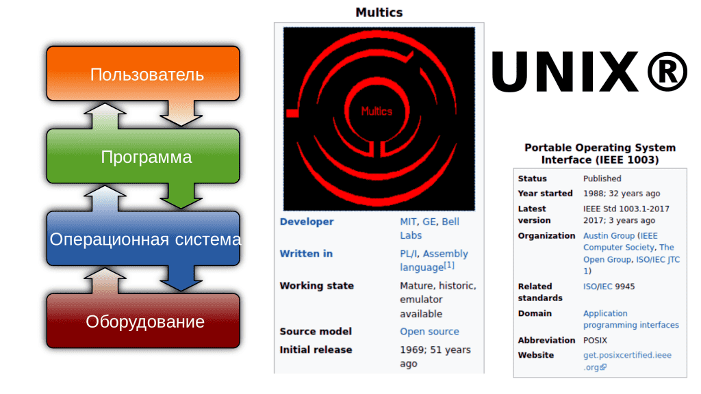
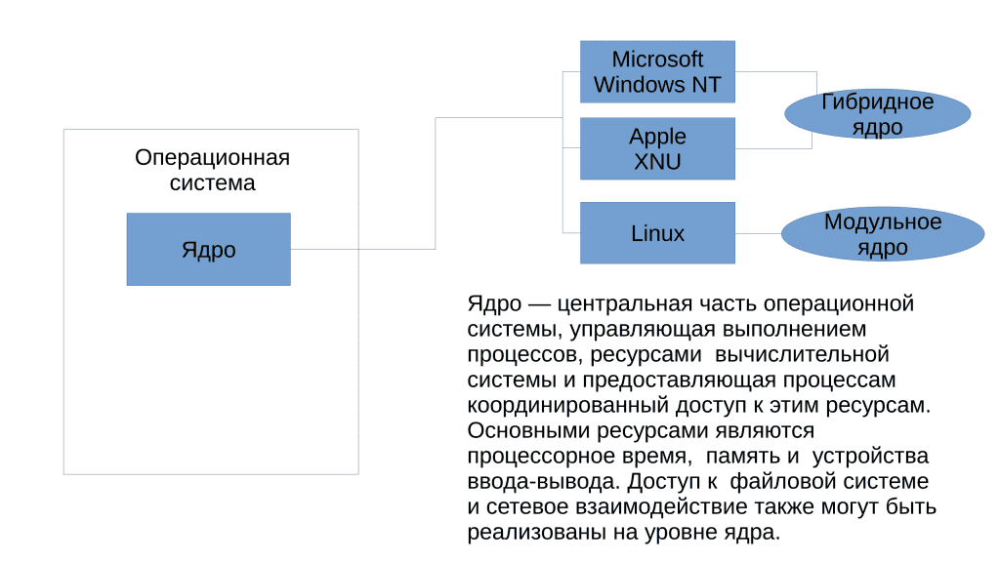
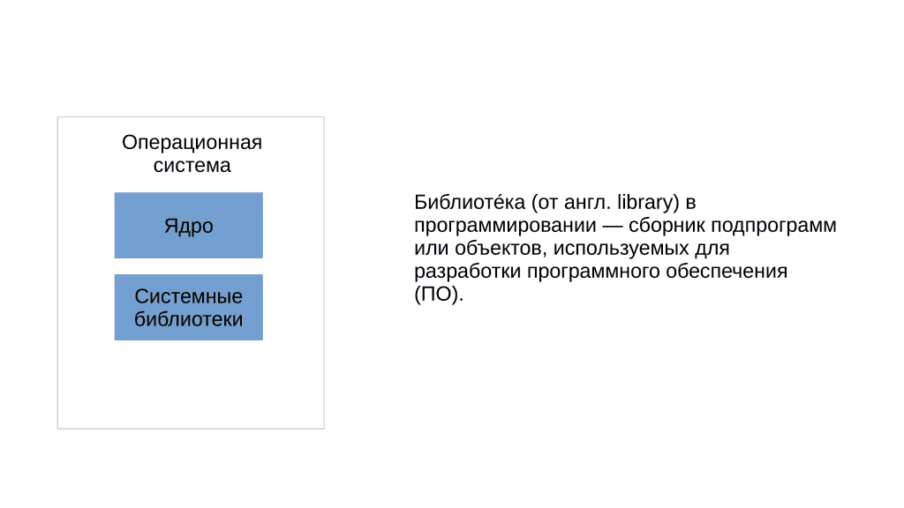
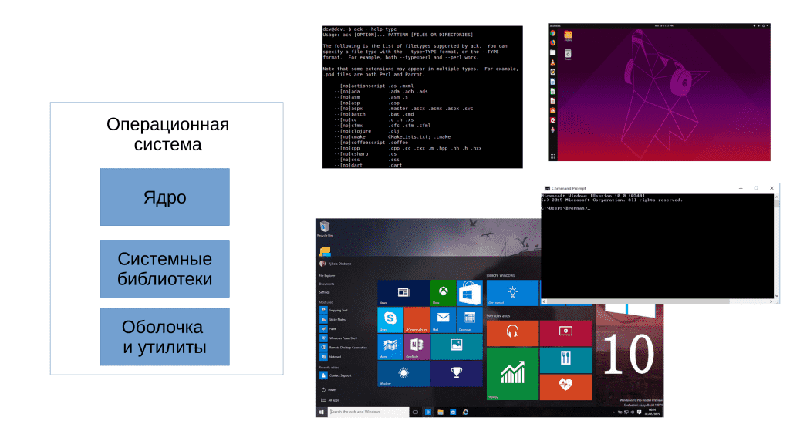

01. Операционные системы и GNU-Linux
Появление операционных систем
Во времена моего детства на вопрос «какая у тебя операционная система?» люди отвечали «Pentium 4». C появлением мобильных операционных систем Android и iOS и развитием публичного противостояния между Apple и Samsung все больше людей узнало понятие «операционная система». Но для полного понимания этого термина нужно ознакомиться с историей программного обеспечения и понять, как и почему оно появилось и развивалось. Поэтому давайте заглянем в историю программного обеспечения.
Раньше компьютеры были настолько большими и дорогими, что их могли позволить себе только крупные организации и учреждения, такие как университеты и научно-исследовательские центры. При этом компьютеры выполняли только одну задачу в одно время. Под задачей я подразумеваю прикладную программу – программу, с которой работает пользователь. Допустим, ваш браузер, почтовый клиент, текстовой редактор или игра – всё это прикладные программы. Хотя в те годы это были программы для научных и инженерных исследований.
Так вот, как правило, компьютеры стояли в институтах и работники могли долго ждать, пока до них дойдёт очередь поработать с компьютером, как в семье где 10 детей и 1 компьютер. Со временем, мощности компьютеров росли и была необходимость выполнения нескольких задач последовательно или параллельно, а также возможность работать нескольким пользователям одновременно. Была разработана концепция разделения времени, так называемый «time-sharing», на основе которой создали служебные программы, которые решали вопросы многозадачности.

С развитием компьютерной техники, такие служебные программы стали приобретать всё больше функций. Если раньше программы взаимодействовали с оборудованием напрямую, то теперь часть задач брали на себя служебные программы. Они стали эдакой прослойкой между прикладными программами и оборудованием. Набор этих служебных программ начал называться операционной системой, одна из первых реализаций которых называлась Multics. На её идеях создали UNIX, который задал стандарты для современных операционных систем.
Из чего состоит?
Операционная система – это прослойка между прикладным ПО и оборудованием. Но и ОС можно разделить на 3 составляющие:

Ядро - это программа, отвечающая сразу за несколько важных функций. Одной из ключевых функций ядра является планирование задач, то есть определение того, какие программы и в каком порядке будут выполняться процессором для максимальной производительности и эффективности работы, тот самый «time-sharing». Еще одной важной функцией ядра является управление оперативной памятью – ядро решает, когда и что загружать или выгружать из оперативной памяти. Также ядро отвечает за непосредственную работу с оборудованием за счёт специальных модулей, называемых драйверами. Когда прикладное ПО хочет поработать с оборудованием, допустим, игра хочет обработать какие-то данные и вывести на экран изображение, она обращается к ядру, а ядро пересылает запрос через драйвер на видеокарту. У ядра есть и другие функции, но на пока этого достаточно. Следует отметить, что существуют различные типы архитектур ядер, и в данном случае мы рассмотрели модульный вариант, который используется в операционной системе Linux.

Системные библиотеки - это важная часть операционной системы, хранящая код, функции и данные, которые используются при запуске и работе прикладных программ. Хотя администраторы редко взаимодействуют с библиотеками напрямую, знание о них может быть полезно при устранении проблем с прикладными программами.

Оболочка и утилиты. Одна из важных функций операционной системы – дать пользователю интерфейс взаимодействия с компьютером. Интерфейс может быть как графическим, так и текстовым. Не стоит думать, что текстовый интерфейс – это какое-то окно в скрытый мир компьютера, через которое вы можете делать с компьютером всё что угодно. Да, текстовый интерфейс, как правило, несколько функциональнее графического, но его писали люди для людей и функции у него как у графического интерфейса – дать возможность запускать программы, работать с файлами и т.п. Современные операционные системы содержат сотни небольших программ, называемых утилитами, которые могут служить как для самой системы для каких-то внутренних задач по обслуживанию, так и для пользователей для какого-то базового функционала, а также для диагностики и решения проблем.
GNU/Linux и дистрибутивы
Коммерческие компании, занимающиеся разработкой операционных систем, дают название своим продуктам Windows, MacOS, Android или iOS. Но в случае с GNU/Linux всё сложилось несколько иначе. Ядро, называемое Linux, разрабатывают одни люди, точнее даже сказать тысячи людей и компаний, а библиотеки и утилиты сотни других людей и компаний. Что-то осталось ещё с 80-ых, а что-то появляется и исчезает каждый год. Как правило, какие-то базовые утилиты разрабатывает организация GNU, а большинство остальных утилит и оболочек выпускается под лицензией GNU GPL (в том числе ядро Linux).
Существуют люди и компании, которые берут эти компоненты, соединяют и получают готовую операционную систему. Но у разных людей свои видения и свои цели, в итоге получается много разных вариаций этой операционный системы, которые называют дистрибутивами. Ubuntu, Debian, Centos, RedHat Enterprise Linux – всё это дистрибутивы, которые используют программы GNU и ядро Linux. Есть дистрибутивы, которые отличаются только набором предустановленных программ и настройками графического интерфейса, а есть дистрибутивы, в которых абсолютно разный подход к обновлениям, поддержке и даже наличие каких-то специфичных программ. Но так как все эти дистрибутивы в основе имеют программы GNU и ядро Linux - их можно условно объединить под одним названием GNU/Linux.
Распространение ОС
Современные операционные системы для персональных компьютеров, как правило, распространяются в виде специальных файлов с расширением ISO. Этот файл – так называемый «образ диска» – содержит программу-установщик операционной системы и для установки его следует записать на диск или флешку и загрузить компьютер с этого устройства. Несмотря на то, что возможно установить несколько операционных систем на один компьютер, ошибка при установке может привести к потере данных, поэтому к процессу установки следует отнестись с особой ответственностью. Мы рассмотрим основные шаги по установки операционной системы в отдельной части.
Как правило, дистрибутивы GNU/Linux можно скачать с официальных сайтов дистрибутива бесплатно и без всяких регистраций, а коммерческие операционные системы предоставляют доступ к этому файлу только после покупки лицензии – специального документа, разрешающего использование копии программного обеспечения. Некоторые операционные системы жёстко привязаны к определённому железу – как например, MacOS, но большинство ставится на различное оборудование при наличии драйверов.
В этой теме я предоставил минимально необходимую информацию об операционных системах и GNU/Linux. Советую обратить внимание на «Полезные ссылки», указанные в практике к данной главе.